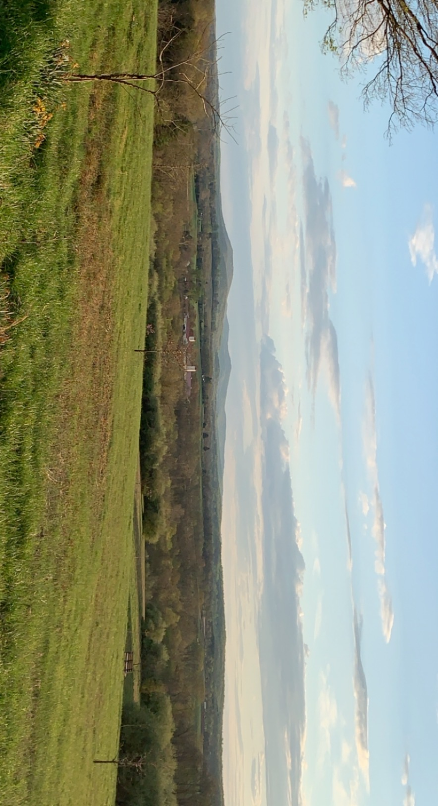

When I was a teenager living in suburbia, there wasn’t a lot to do. Memes talking about “hanging out” in your hometown when it's really just you and some friends sitting in a car in an empty strip mall parking lot acknowledge this. Northern Virginia is cool because there ultimately are options if you can’t bear the boredom for much longer. But it’ll require a car and at least an hour of your time. At some point in high school I became obsessed with looking at aerial maps and street views of familiar places, and realized there were dozens of cities, towns, and villages within my own county that I had either never visited or heard of at all. Once I got my license and felt confident enough doing so, I started exploring some of these towns. There were so many beautiful sights I experienced that my shaky iPhone photos I took while I was driving couldn’t do justice. I hope I can try to simulate at least some of that glory here.
 go back
go back